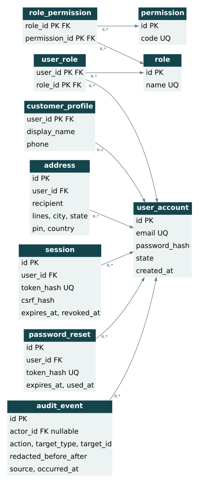
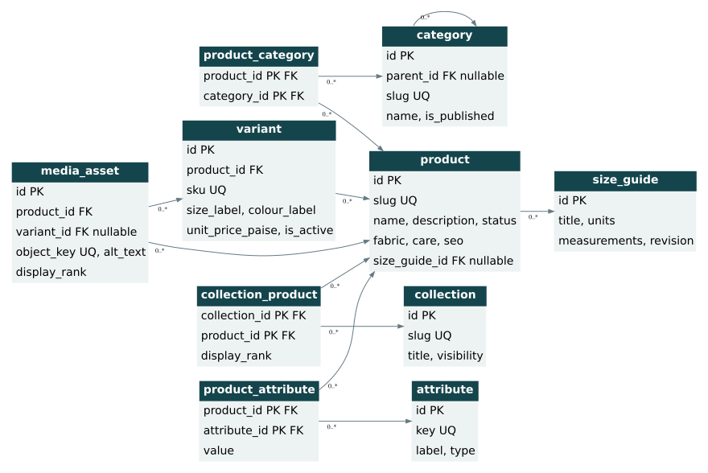
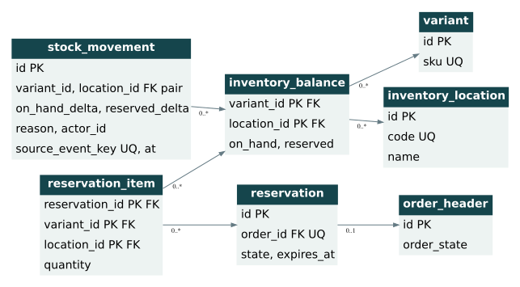
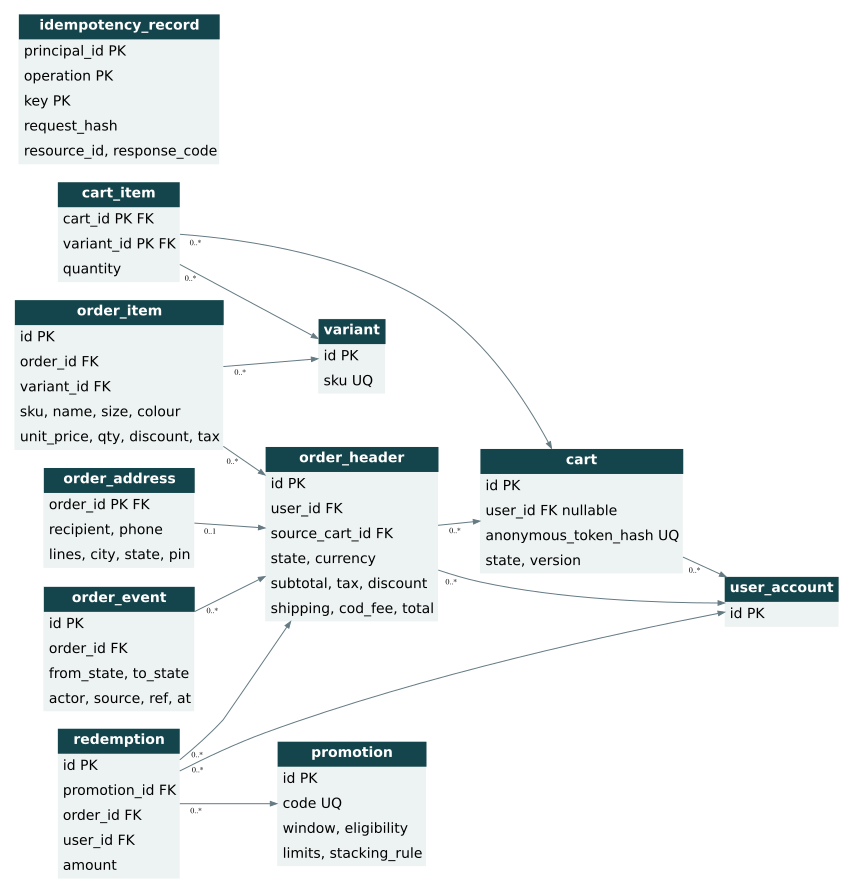
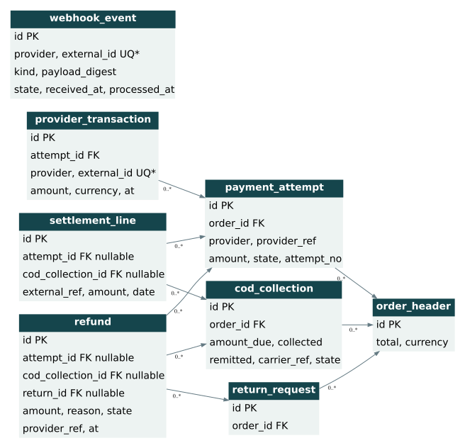
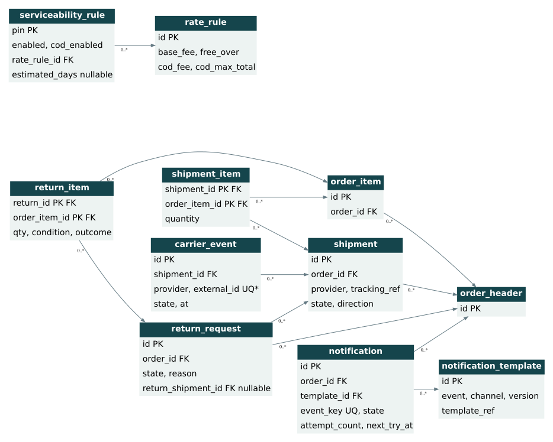

Proposed MVP schema. Open a diagram to zoom. Refunds and settlement lines reference exactly one payment source: prepaid attempt or COD collection. Arrows point from the child to its referenced parent. The label counts child records per parent. PK = primary key, FK = foreign key, UQ = unique. UQ* scopes the external ID to its provider. Fields marked nullable have optional parents. Category can reference its own parent. Audit and idempotency targets refer to multiple resource types.
The initial migration implements core columns on category, product, product_category, variant, inventory_location and inventory_balance. Remaining columns and entities are planned. Money is stored in integer paise.





